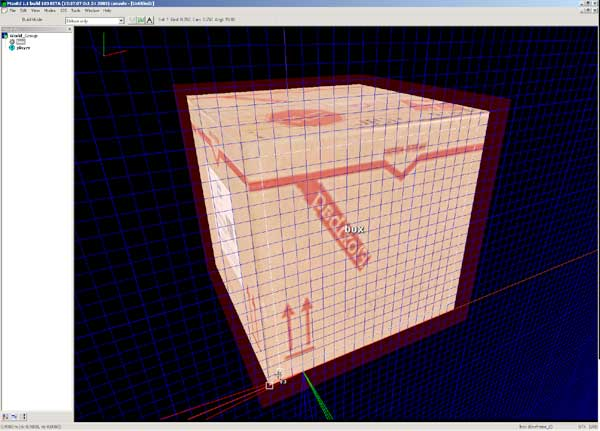
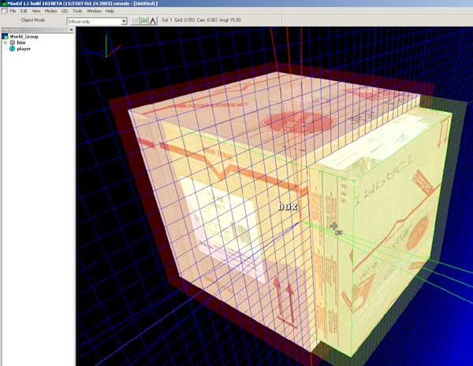
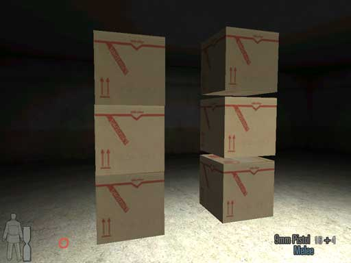
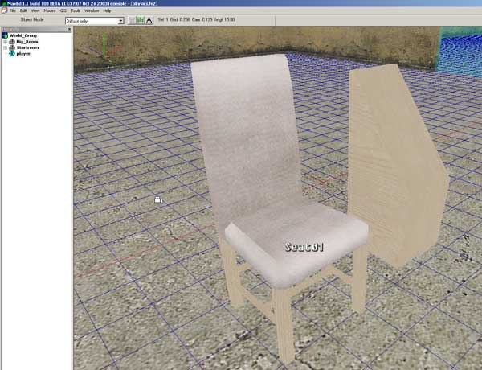
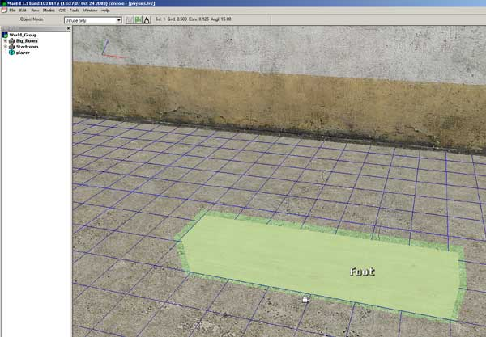
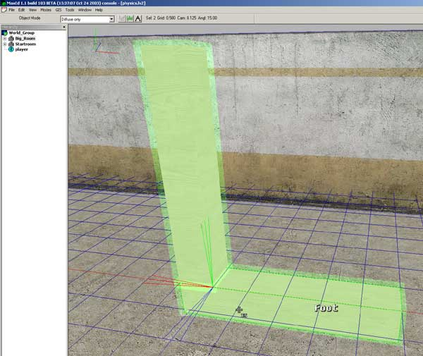
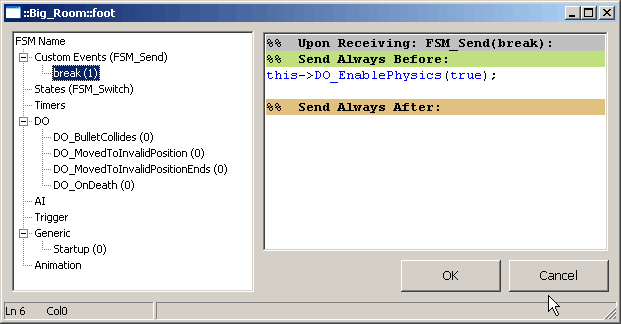

|
Physics
Max Payne 2 incorporates some third party software, the biggest addition being the Havok physics engine (http://www.havok.com). Havok is used for collision checking and to simulate physical object
behaviour.
But before you even start this tutorial, you need to know about mesh creation, dynamic objects and FSM scripting. So read those tutorials first.
Basics
All physical objects need to be dynamic and convex (check what convex means by looking into the
"Dynamic Objects" -tutorial.
Let's first do a simple box which goes physical. Open up the editor and make a cardboard box. Then make it dynamic.
Then open up the properties and change the physical material to "cardboard_hollow". Also, switch lightmaps off, since we don't want static shadows to stay on the object while it moves around the room. The dynamic lighting will be automatically used when lightmaps are turned off. Also, switch "Cast No Shadows" on, so that there won't be a shadow left on the ground, when the object starts moving.
When these changes are done, go to F5-mode and choose the box and open up the FSM dialog by pressing B. Go to the StartUp -handler and write this:
this->DO_EnablePhysics(true);
That's it. You've created your first physical object. You can try it out at the level now if you want. This particular box will be physical right at the level startup, when the "DO_EnablePhysics" -message is sent. Before that, the object behaves like a normal DO; you can release any DO to physics at any time. But after they've gone physical, there's no turning back. Physical objects can not be animated nor returned to the state before it went physical. They can, however receive normal DO messages, like
DO_Hide.
The physical material defines how much the object will weight and what kind of sound it makes when it bounces around. The weight is defined by the level exporter. It automatically calculates the cubic capacity of the object and then checks the pre-defined density value for that particular physical material.
Separate Collision Meshes
If you tested the box we made earlier. You might have noticed that the box floats slightly in the air. That's because there's a 5 centimeter "buffer area" around the collision geometry of the object. It's a physical simulation necessity, the size of which is determined by the resolution of the physical simulation. Fortunately there's a way around the problem; we'll make a smaller, invisible, object inside the visual object which will handle the actual collisions.
First we'll need to include a 5 cm grid size to the document preferences. We can include completely custom grid sizes to MaxED but as it is generally a very bad idea to add other grid sizes than exact multiples or divisions of the existing ones (so to keep things in grid), we should use a separate test level to build these objects.
Open up another MaxED2 and start a new level. Click Tools -> Document preferences and look up the "Grid Scale steps". Add a value of '0.05' between 0.03125 and 0.0625. Then copy the box to that level and change the grid scale to 0.05. Align the grid with the box and create a mesh which is that 5cm smaller at every dimension than the original box. Use the same material as the original box.

When the mesh is done, group it to the original object and open its properties. Check "Do Not Render" on along with the "Cast No Shadows". We don't want this object to be drawn, since it acts only as a collision object for the visual object. Press OK and open up the properties of the original object.
Check the first flag "Collisions" off, but leave the others on so that they are
grayed out. Then those specific collisions will be inherited properly by the child object. Also switch "No Decals" on, since the bullets won't collide to the object anymore and they won't be seen from the collision object inside.
Now move the collision object inside the original box, make sure that the collision object's shape is exactly 5 cm smaller in every side.

That should do it. Now copy both objects back to the original level and try it out.
As you can see, the difference is huge

It's a good idea to make the box into a prefab. Read about that in the
prefabs-tutorial.
Also, it's a good idea to keep the collision mesh as simple as possible. Here's how our basic chair collision mesh looks like.

It looks overly simple, but it works like a charm in the game.
It's possible to make it so that the physical object causes damage when it hits a character hard enough. The DO_MovedToInvalidPosition -event for physical objects is triggered when the object hits a character with enough energy (calculated with Velocity * Mass).
Open the FSM dialog for the object and go to the DO_MovedToInvalidPosition handler. If you want the character to be killed when the object hits him hard enough, use line
activator->C_SetHealth(0);
If you want it only to cause some damage, use line:
activator->C_CauseDamage(10);
The parameter is the amount of hitpoints deducted from the character health. Change the parameter at your digression.
Concave physical objects
If you want to form concave shapes with the physical object, you need to group static children which extends the original
shape.
Let's imagine I want to create a L -shaped physical object. The problem is that the shape of letter L is concave. We need to have two objects to be able to create it. First we'll do the foot piece and make it dynamic.

Then we'll attach the upper part as a static child.

Then we'll just throw the physical messages into the foot -object which will activate the physics.
If the upper part would be dynamic, it would fall of as an individual physical object of its own. That means that if you want to make an object which breaks down as several physical objects when shot at, it can't be physical at startup, but only after the object is "broken".
Let's evolve the L -shaped object so that it breaks down after being shot at.
First remove the DO_EnablePhysics -message from the foot object and make the upper object dynamic as well. Then open the FSM dialog of the foot object by choosing it in F5 mode and pressing B. Then press ALT-E to create a custom event, name the event "break". Then type the familiar
this->DO_EnablePhysics(true);
into the event, it should look like this

Then go to the StartUp handler and write
#change the hitpoints value at your digression
this->DO_SetHitpoints(20);
This gives the object 20 hitpoints, and when the object receives damage, the hitpoints will go down, like with any character in the game. 20 hitpoints equals about two 9mm gun shots.
Then move on to the OnDeath handler and write
this->FSM_Send(break);
Add the DO_SetHitpoints -message to the upper object StartUp as well. In OnDeath you should have
parent->FSM_Send(break);
This sends the break -custom event to the parent, where you earlier created it.
That's it. Try it in the game and you can see that the object is not physical in startup. Try shooting it and the pieces should fall apart.
Adding separate collision meshes does not affect this, since static children will always act as extensions of the dynamic parent. So if it receives damage, it means the parent receives damage.
|